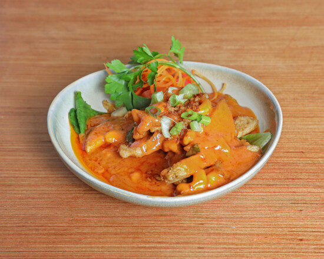
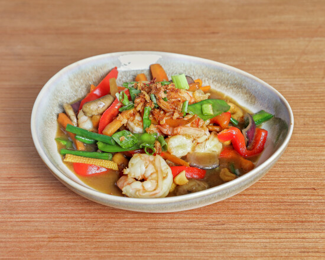

West End supper,
since 1986.
A small, family-run Indonesian kitchen in the heart of the West End. Some dishes come hot, some mild, some tangy — our staff will help you balance the table, whether it is your first time or your fiftieth.

 Rendang
Rendang

PrawnsWhat Indonesian food tastes like
Fire, peanut & rice
Indonesian cooking gathers influences from China, India, the Middle East and the old Dutch trade routes. Ours is cooked close to what we eat at home — some grilled, some fried, some gently stewed.
If you are new to the food, ask a waiter. We will happily talk you through tastes, textures and amounts.
Build a balanced table — a hot dish, a mild one, something spicy and something tangy. If a dish needs more heat, ask for sambal. Most of our cooking is gently spiced, so please tell your waiter how hot you would like it. All meat is halal, vegetarian dishes are available, and only a very few dishes contain nuts — tell us about any allergy and we will keep your meal safe.
Sate
Skewers of grilled meat or tofu served with a peanut sauce. A gentle, well-known way to start.
Rendang
Beef slow-cooked until tender in a dark, spiced coconut paste. Deep and aromatic rather than fiery.
Nasi Goreng
Indonesian fried rice with a selection of meats and seafood in a mixture of mild spices. The easiest first plate.
Gado Gado
Vegetables and tofu dressed in a warm peanut sauce. A good vegetarian plate and a natural partner to the grilled dishes.
Whole Seabass
A whole fish, cooked to order and served to share at the centre of the table.
Sambal
A hot, aromatic chilli sauce served on the side. Ask for it if you want real heat — rice is the best cure.

A rice table in practice — several small dishes around one plate of rice.
For the first-timer
The rice table
Rijsttafel — a Dutch word meaning “rice table”.
A shared selection of dishes brought together, the easiest way to try a little of everything. If you do not yet know Indonesian food, order the rijsttafel and let the table do the talking while the staff talk you through what is what.
Come with a few friends and you can all sample more of the menu between you. Ask your waiter and they will steer you through tastes, textures and amounts.
Eight of our most popular dishes, served to share. Minimum two people. Vegetarian dishes are available, and all meat is halal — please tell staff about any allergy.
Eating before a performance
Before the show
We are on Shaftesbury Avenue, in the middle of the West End. If you are eating before a performance, tell us your theatre timing when you book — we will plan the meal around it. Then you can relax and eat properly rather than rushing.
Book ahead, and if you wish to tweak your time to reach a theatre, say so in the notes. We are a small restaurant, so please give us plenty of notice if you need to change a booking.
The kitchen closes about thirty minutes before the restaurant — please leave us enough time to cook.
1986Established on Shaftesbury Avenue
Family-run, not fine dining
Bali Bali has served London since 1986 and remains a small, family-run restaurant — somewhere to settle in, share a few plates and be looked after rather than politely impressed.
That family-run character shapes the experience: regulars know the welcome, while newcomers can be guided towards a first nasi goreng or a shared rijsttafel.

Cooking close to what we eat at home — some grilled, some fried, some gently stewed.
What people keep mentioning
Talking with
your mouth full
The themes below are the ones guests return to again and again. We have set out what they are about rather than lift individual reviews — come and decide for yourself.
Authentic Indonesian cooking
The dishes taste like the food guests know from Indonesia — cooked to order, with real spice and depth.
Warm, family hospitality
People notice that the restaurant is family-run: the welcome feels personal, not corporate.
Excellent value
Generous, well-priced food in the middle of the West End — often singled out as rare for the area.
Friendly, helpful service
Staff guide first-timers through the menu and are happy to recommend how to balance the dishes.
Good for pre-theatre
Guests appreciate being able to eat before a show without feeling rushed through it.
Find us & book
Shaftesbury
Avenue
London WC2H 8HL
United Kingdom
Leicester Square
Underground · Northern & Piccadilly
Bali Bali
150 Shaftesbury Avenue
Covent Garden
Underground · Piccadilly
Book a table
We are a small restaurant with a limited number of tables. Phone to confirm your reservation, and tell us your theatre timing if you have one.
+44 20 7836 2644Groups of 6–50: contact us about a menu tailored to your party — enquire by phone.